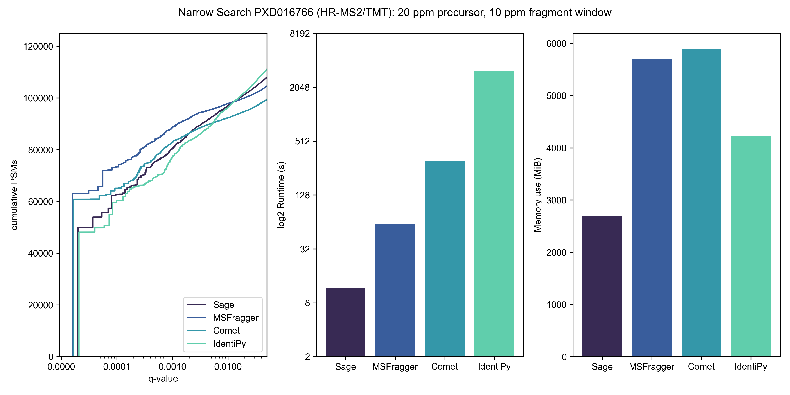
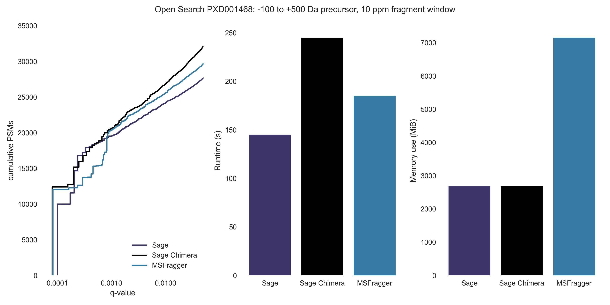
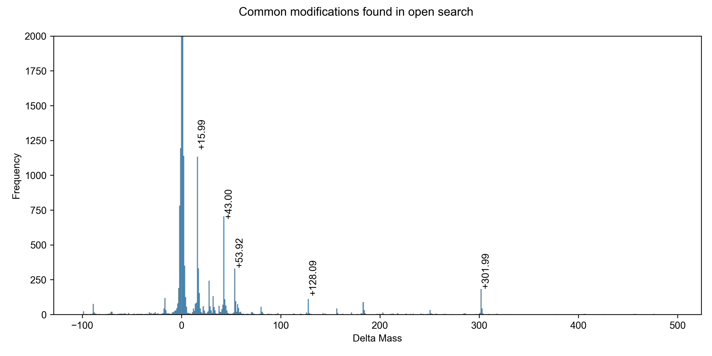
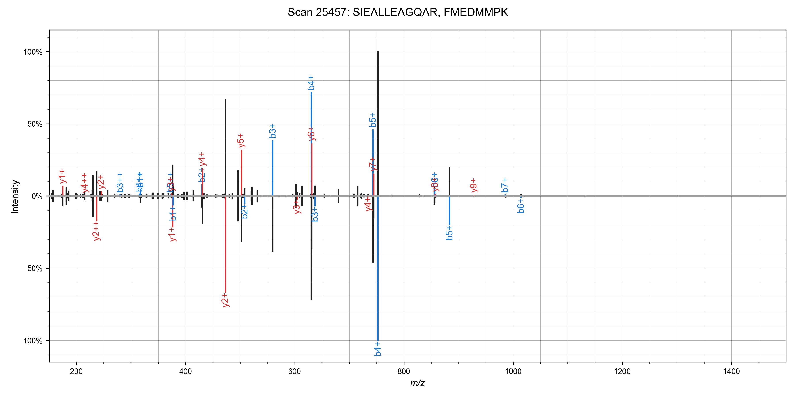
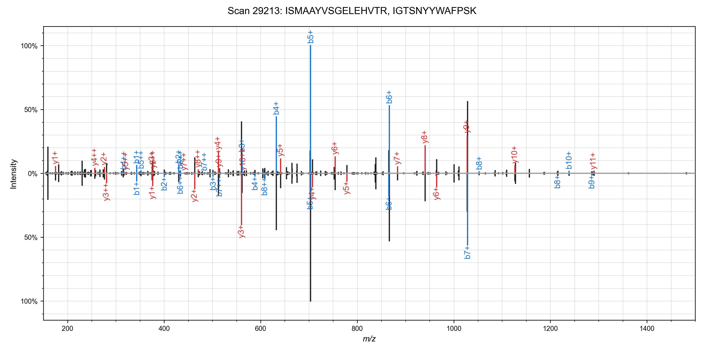
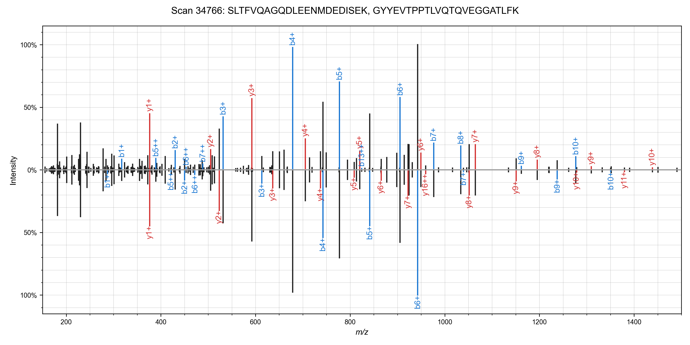
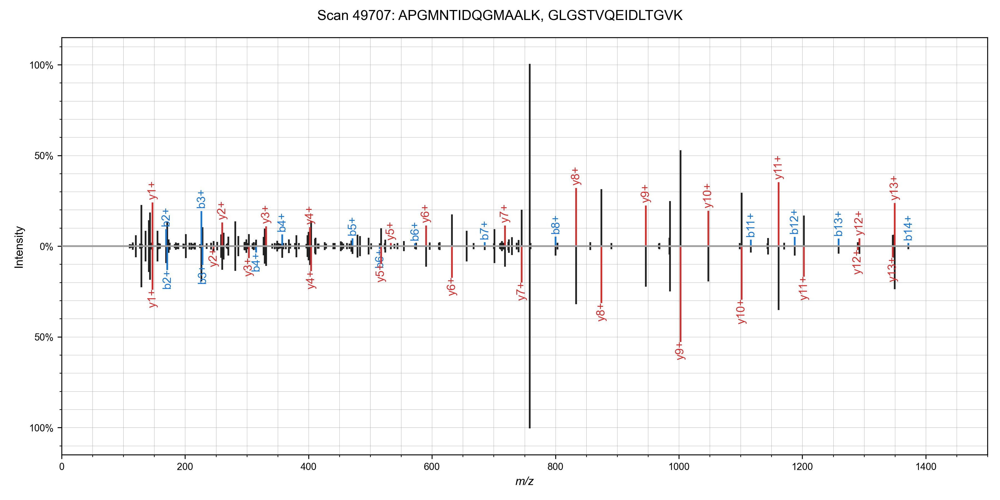
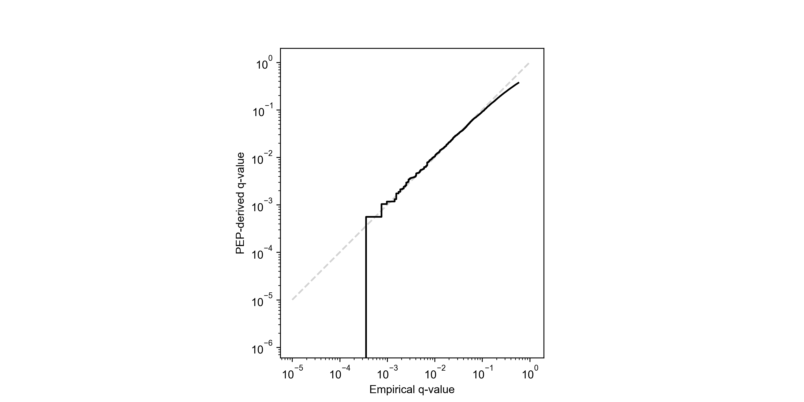
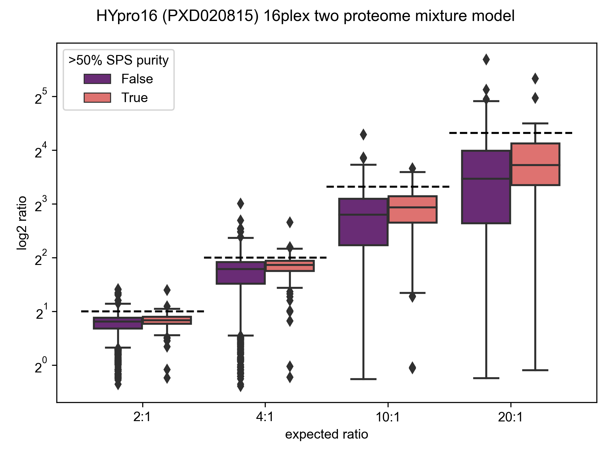
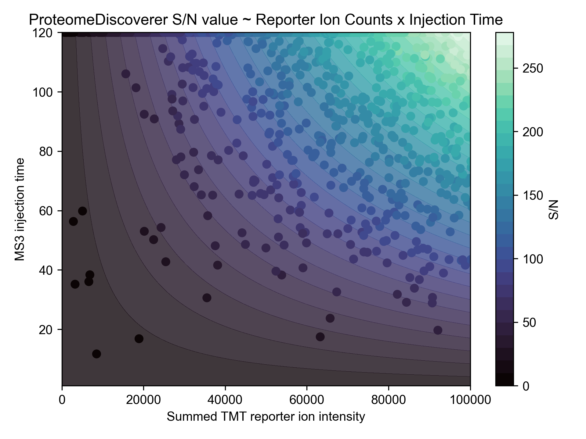

Proteomics searching so fast it seems like Magic
Introducing Sage: a new cross-platform, extremely performant, open source proteomics search engine; written in RustHere are some of the features of Sage:
- Super-ultrafast out of the box,
- Cross platform: natively run on Windows, MacOS, or Linux
- Small and simple codebase, including comments & tests
- Fragment indexing strategy a la MSFragger allows for blazing fast narrow & open searches
- Can assign multiple peptides to a single spectrum (chimeric/co-fragmenting spectra)
- FDR calculation using target-decoy competition, with built-in and incredibly fast linear discriminant analysis
- PEP calculation using a built-in non-parametric kernel density estimator
- Percolator/Mokapot compatible output (provides minimal improvement over built-in LDA model)
- MS3-TMT quantification, with calculation of SPS precursor ion purity, for reduced TMT interference
- Configuration by JSON files
- Open Source & Free Software
- Sage is organized as both a binary and an extensible Rust library, enabling integration into other applications
And some features that are work-in-progress:
- Peptide & protein FDR calculation using picked- approaches
Finally, some disclaimers and forewords:
- Caveat emptor - Sage has great performance, but it is still missing some features found in many other search engines. Use it at your own risk (if you do decide to try it out, please don't hesitate to contact me!)
- I made best efforts to benchmark Comet and MSFragger in good faith, including reaching out to their maintainers to check parameters - that being said, it is totally possible that I have misconfigured them. You can find the benchmarking parameters (along with all of the code!) in the Sage GitHub repository. They are both great, widely-used, full-featured tools and I recommend incorporating them into your workflows! Sage stands on the shoulders of giants.
- This was undertaken largely for fun and self-learning purposes - as such, this isn't a peer-reviewed project (yet). However, hopefully it can serve as a pedagogical tool, as I have tried to keep the codebase small (~1500 loc), well commented, tested, and amenable to hacking on.
- Sage only accepts mzML files as input
Proteomics database searching

Andy Kong and Alexey Nesvizhskii from University of Michigan presented an alternate approach in their 2017 paper detailing their new database search tool: MSFragger. Rather than exhaustively search through all candidate peptides based on precursor mass, they instead combine all theoretical fragments from every peptide in the database - and then search by fragment m/z and filter by precursor mass: "In the MSFragger strategy, theoretical spectra that share no common fragments are effectively bypassed". They spend a couple paragraphs in the methods section outlining the algorithm and search steps, but the codebase itself is closed source and binaries are only freely available for non-commercial use (which Alexey kindly reminded me of when I emailed him about benchmarking MSFragger). Regardless, it's an elegant and performant reformulation of database searching, and it captured my imagination enough that I had to try my hand at implementing it.
Fragment Index data structure
"Show me your code and conceal your data structures, and I shall continue to be mystified. Show me your data structures, and I won't usually need your code; it'll be obvious."
- Altered quote by Fred Brooks

Data structure construction:
- After in silico digestion of our database (using trypsin with 0 missed cleavages, in this case), we de-duplicate our list of peptides and then sort them by mass.
- Next, we generate all theoretical b- and y- fragment ions for each peptide in our list, collecting them in an array.
- After every fragment ion has been generated for all peptides in the database, we sort the entire list by fragment mass.
- The following step is key: we create discrete bins of fragments (16 fragments/bin in this example, or 1 row), and within each bin we now sort by precursor mass.

We now have our 2 level binary tree: the outer level acts as a B+ tree, allowing us to rapidly select bins containing fragments within a given window, and within each bin we can run a binary search for fragments whose precursor is within our desired tolerance.
Here is the simplified search algorithm in pseudocode:
function scoreSpectrum(precursorMz, spectrum):
scores <- {}
for fragmentMz, fragmentInt in spectrum:
innerBTree <- binarySearch(outerBTree, fragmentMz +/- tolerance)
theoretical <- binarySearch(innerBTree, precursorMz +/- tolerance)
for candidate in theoretical:
scores[candidate] += fragmentInt
sort(scores)
best <- scores[0]

The real deal
Finally, here is what our example peptide-spectrum match looks like after annotated with matching peaks: there are ~4000 potential candidates based solely on precursor mass - our algorithm only ends up scoring ~1500 of them, because the remainder do not have any fragment peaks in common with our experimental spectrum! And for those ~1500, on average only 1-2 fragments are actually compared. This is in stark contrast to how SEQUEST or Comet would score the same spectrum: comparing all fragments for all 4000 peptides.

Benchmarking Results
My proteomics engine is based off of MSFragger's algorithm, so it would be reasonable to expect them to have similar performance - however, this is where Rust really shines! I will let the results speak for themselves, though!- All searches were run on c5ad.8xlarge EC2 spot instances (32 vCPU cores, 64 GB RAM, NVMe disks,
$0.75/hr)
using:
- the same FASTA database,
- and the same input mzML files (processed using MSConvert).
- Post search FDR refinement was performed using Will Fondrie's excellent Mokapot tool
- In general, I stuck to default search parameters/workflows for Comet & MSFragger, where possible - changing things only to match them across engines. You can find the benchmarking parameters (along with all of the code!) in the Sage GitHub repository.
- All searches were performed without variable modifications, since each engine handles these somewhat differently
- Performance will vary across systems - Sage performs best on amd64 systems running *nix operating systems - but it will also run pretty well on aarch64 or Windows setups!
- Comet & Sage were both compiled from source on the EC2 instance, MSFragger jar was used as downloaded, IdentiPy was installed via pip.
- I was going to benchmark MSGF+ as well, but it too slow (it took over 12 minutes for a single mzML file from the TMT dataset - about 750x slower than Sage). Given that EC2 instances aren't free, I will let the reader spend $1 to run a single replicate of this benchmark themselves :)
To benchmark TMT search performance, I downloaded high res TMT-MS2 data from the paper Benchmarking the Orbitrap Tribrid Eclipse for Next Generation Multiplexed Proteomics from PRIDE PXD016766
If MSFragger is "ultrafast", what is Sage?
I half-joke: MSFragger really is fast! But, Sage is about 5x faster than MSFragger, 20 faster than Comet, 150x faster than IdentiPy, and 500x faster than MSGF+ on a typical TMT search and identifies a similar number of PSMs at 1% FDR.
Sage is so fast that computational cost of searching becomes irrelevant - you could re-process all of PRIDE's annotated PSMs (580,917,172 at current count) using Sage for less than $3, assuming you had the bandwidth to keep the engine fed!
| Engine | Runtime* | Cost to process 12 mzML files | PSMs at 1% FDR |
|---|---|---|---|
| Sage | 18 s | $0.0038 | 100,448 |
| MSFragger | 101 s | $0.0210† | 97,844 |
| Comet | 345 s | $0.0716 | 92,333 |
| IdentiPy | 3128 s | $0.6495 | 96,465 |
| MSGF+ | >9000 s# | $1.8690 | - |
† plus licensing fee, presumably
# benchmarking terminated after first file due to cost, time is extrapolated

Open search
Wide open
Let's open up our precursor mass window to -100 Da to +500 Da; this is typical of a search for unknown PTMs or chemoproteomic applications. And, this is where MSFragger really shines - it identifies ~1,000 extra PSMs from this single file search when we really open up the precursor window. Room for improvement for Sage! (Read below to see one strategy of improving this - chimeric searching) You'll note that Comet isn't in this graph - I don't think there's any point in benchmarking it, timewise, and it also doesn't seem amenable to doing a non-symmetrical precursor window. Given that most modifications involve the addition of a PTM (and thus positive mass shift), it makes sense to use asymmetric windows for an open search strategy.
-100 to 500 Da precursor, ±10 ppm fragment window:| Engine | Runtime | PSMs at 1% FDR |
|---|---|---|
| Sage | 113 s | 24,432 |
| Sage Chimera | 171 s | 28,049 |
| MSFragger | 185 s | 25,534 |
Don't think that you need a beefy c5ad.8xlarge instance to go fast - I can complete the same 600 Da open search on my MacBook M1 Air (8 cores, 16 GB RAM) in ~7.5 minutes!
Chimeric spectra with Sage
I was able to add in matching of chimeric spectra to Sage in ~55 lines of code (a nice benefit to writing your own search engine!). The algorithm is straight forward: after finding the best candidate for a spectrum, remove peaks assigned to that candidate, and search it again!This works quite well in practice - I've observed around a 10% increase in PSMs at the cost of a 50-90% increase in total run time. Here are some nice examples of spectra that can have multiple candidate peptides assigned (from the first file of the TMT benchmark data set)    We can run the chimeric search on our non-TMT labeled dataset as well (PXD001468), and we identify some ~1,800 scans with chimeric spectra (1% FDR as scored by Sage). 
Linear Discriminant Analysis
Most database search algorithms compute multiple scores for a given peptide-spectrum match (e.g. XCorr, Delta CN). In the olden days (especially before target-decoy competition), mass spectrometrists would apply separate thresholds to each score to refine the false discovery rate - the majority of search engines do not directly calculate the FDR.Several post-searching approaches (Percolator, PeptideProphet, etc) have been described that utilize machine learning or expectation-maximization algorithms to combine multiple features in order to better refine the FDR - this yields more PSMs for final analysis when compared to simple filtering off of just 1 score feature (XCorr/etc).
In my opinion, the most explanable approach is "linear discriminant analysis" - this technique returns a linear combination of features that can be reduced to a single "discriminant score" that maximizes the distance between our target and decoy PSMs.
For instance, here are a subset of the features Sage calculates for each candidate peptide-spectrum match:| Feature | Description |
|---|---|
| Hyperscore | Primary score function |
| Delta hyperscore | Δ between current candidate and next best candidate |
| Delta mass | Difference between experimental & calculated precursor mass |
| Average ppm | Average difference between experiment & calculated fragment masses |
| Longest y | # of y-ions in the longest continous ion ladder |
| Poisson | Log probability of matching exactly N fragment peaks |
These features can all be combined to find a combination that performs better than filtering off of one alone.

I got tired of having to post-process my results, so I implemented Linear Discriminant Analysis directly in Sage (see graph above) - this allows us to find the coefficient for each feature that provides the best separation between our known-decoys and targets. Unfortunately, Rust doesn't have a strong selection of ML libraries, so I had to built it out completely from scratch - starting with a linear algebra module. As a side benefit, I now understand what a eigenvector is!
In the end, I built a hand-rolled LDA algorithm that achieves 1:1 results with the popular Python scikit-learn package, but is 25-50% faster. I also implemented a non-parametric model (kernel density estimation) for calculation of the "posterior error probability" (local FDR - the probability that a given PSM is incorrect) for each PSM. For a full discussion on false discovery rates and posterior error probabilities, I highly recommend the excellent paper Käll et al., 2008.
MS3-TMT Quantification
This post is already getting crazy long, so I will just quickly note that Sage is capable of quantifying MS3-TMT reporter ions while searching!It also has some fun features, like calculation of "SPS purity" - what percentage of total MS2 ion intensity selected for MS3 came from matched b-/y- ions?
Making my own TMT quantification engine allowed me to do some investigation into ProteomeDiscoverer's signal-to-noise TMT measurement... and as best as I can tell, it is the reporter ion counts multiple by MS3 ion injection time, and then divided by some constant factor (R2 = 0.998).
Conclusions
Writing a (relatively bare-bones) proteomics search engine has been a fantastic learning experience. Rust has been my daily-driver programming language of choice for 5 years now, and it really makes writing performant software a breeze, especially with fantastic packages like Rayon! If you haven't given it a try, I highly recommend it.
To wrap things up, I will concede that MSFragger is indeed "ultrafast", and has better PSM identification at the widest open windows - unless you turn on chimeric search! Until then, I recommend continuing to use MSFragger if you're doing wide-open searches.
If you would like to try out Sage yourself, you only need to do a couple steps:
First, head on over to rustup.rs and install Rust/Cargo
Then, run the following commands:
git clone https://github.com/lazear/sage.git
cd sage
cargo run --release tmt.json